TVV RESEARCH SLATE — October 25, 2026 — 12 desks
1. Major Geopolitical Conflict Developments
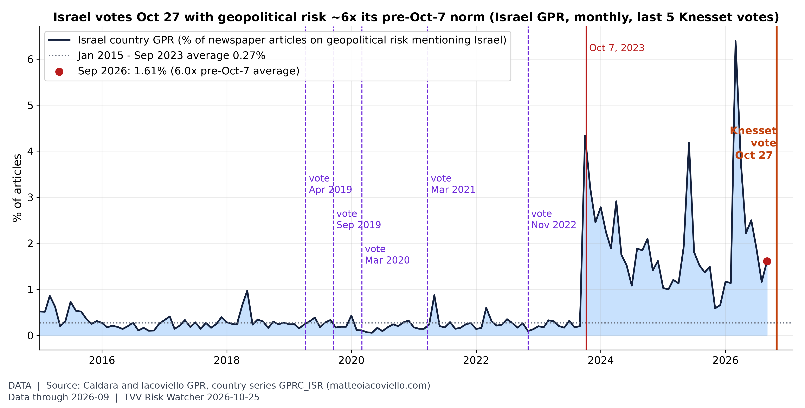
Israel votes Oct 27 at war-level risk. Israel's country GPR read 1.61% of articles in September 2026, 6.0x its Jan 2015-Sep 2023 average (0.27%); before Oct 7, 2023 the peak was 0.97% (May 2018). None of the five 2019-2022 elections came close to today's risk level. Held at Sep 2026 (monthly; next update early Nov). [Data; data as of 2026-09 (monthly; held at Sep 2026, next update early Nov)] Source: matteoiacoviello.com data page
- ★ US-Iran: Trump said the US could strike Iran as soon as "tomorrow" or reach a deal, saying he wants a permanent bar on an Iranian nuclear weapon; Iran's parliament speaker Ghalibaf warned any attack on Iran's territory would draw an "unimaginable" response. On Oct 25 Iran's army said its air defenses shot down a US LUCAS drone over Bandar Abbas; the US has not confirmed this. Iran International live · Al Jazeera live
- ★ Hormuz (conflicting Iranian signals): Iran's envoy to Pakistan was reported as saying Tehran had offered to reopen the strait if the US lifts its naval blockade. The IRGC-affiliated Tasnim agency, citing sources, called reports of such an offer "a lie and fabrication" and said no new proposal was sent. Neither account is independently confirmed. AP · Republic World / ANI · Iran International live
- ★ Saudi-Houthi escalation (Houthi claims, unconfirmed by Riyadh): the Houthis said on Oct 24 they targeted airports in Riyadh, Dammam and Najran, an air base at Khamis Mushait, an Aramco facility in Yanbu, the Rabigh refinery and the East-West Pipeline. The Houthis also fired three ballistic missiles at coast guard sites in Aden and say Saudi strikes killed 17 in Yemen. ABC News · Iran International live
- ★ Ukraine: Russia launched 153 Shahed-type drones (92 jet-powered) plus Banderol cruise missiles overnight into Oct 25; 119 were downed and hits were recorded at 15 locations, including a Vinnytsia apartment block (6 injured). Russian attacks killed 8 and injured 51 over the past day. Zelensky said Russia fired about 1,600 guided bombs, 48 missiles and nearly 2,300 drones over the past week. Russia said Ukrainian drones killed 3 in Bryansk and Belgorod and claimed 532 Ukrainian drones downed (unverified). Kyiv Independent · Anadolu
- ★ Israel votes Tuesday Oct 27: a poll blackout runs until polls close at 22:00 local time. 7,331,981 voters are registered at 12,018 polling stations; exit polls come at 22:00 and official results by Nov 4. Maariv's final poll (Oct 23) had the opposition bloc at 54 seats and the coalition at 48, short of a 61-seat majority either way. Israel 2026 tracker · Jerusalem Post / Maariv
2. Major Terror / Security Incidents
- ★ Jordan church attack update: the death toll from the Oct 23 shooting at a church funeral in Karak has risen to 9, with 40 injured, after one of the wounded died on Saturday. State TV aired footage of three attackers; King Abdullah ordered a firm response and Jordan declared three days of mourning. No group has claimed the attack. Al Jazeera / Reuters · The Guardian
- ★ Civil aviation threat: The Houthis renewed their warning to airlines and travellers against using Riyadh's King Khalid International Airport, calling it a "military target". Al-Monitor · Al Jazeera live
- Cyber: Iranian officials reported a rise in cyberattacks on Iranian systems over the past two to three days; no attribution was given. Iran International live
- Shipping advisory: JMIC Update 107 (Oct 22), still the latest, keeps the Strait of Hormuz threat at SEVERE, with further deliberate attacks expected and possible mining near the traffic-separation scheme. UKMTO / JMIC Update 107
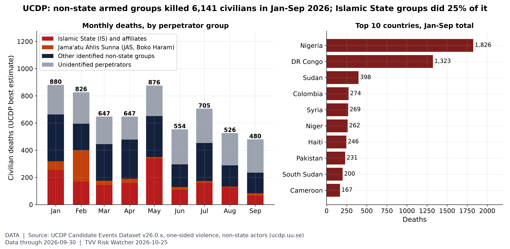
Who is killing civilians. UCDP's preliminary data record 6,141 civilians killed by non-state armed groups in Jan-Sep 2026 (480 in September); Islamic State groups account for 1,525, and Nigeria (1,826) and DR Congo (1,323) lead by country. [Data; data as of 2026-09-30 (UCDP Candidate Events v26.0.9, monthly preliminary release)] Source: ucdp.uu.se data page
3. Earthquakes and Eruptions
- ★ Tibet M7.0 update: the toll is unchanged at 16 dead and 76 injured, and 5 of the 11 seriously injured have improved. 339 homes and 20 livestock sheds were damaged or destroyed; more than 2,500 rescuers are deployed and 35 resettlement sites set up. 949 aftershocks were recorded by 2 p.m. Oct 24 local time, 8 of them M4.0-4.9. Qinghai-Xizang Railway speed limits were lifted and power was fully restored on Oct 24. Xinhua via People's Daily · Xinhua
- No other M6+ quake with significant casualties or damage since the Tibet M7.0 on Oct 22; the Oct 24-25 Vanuatu and Bonin Islands M6+ events have caused no reported damage. USGS search
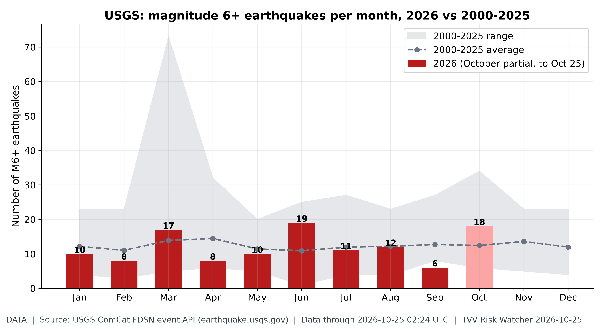
M6+ quakes by month. October 2026 has 18 M6+ quakes through Oct 25 vs a 2000-25 full-October average of 12.4; the busiest 2026 month was Jun (19). [Data; data as of 2026-10-25 02:24 UTC (USGS ComCat, pulled ~7:00 AM ET Oct 25; duplicate solutions merged)] Source: earthquake.usgs.gov data page
4. Solar / Space Weather
- Space weather quiet: no geomagnetic storm since Oct 21's peak Kp 4.67. NOAA SWPC's Oct 25 forecast shows a past-24h max Kp of 2 and no G1 storm expected through Oct 27. NOAA SWPC 3-day forecast
- ★ Magnetic field watch (measured): the north magnetic pole moved 454 km in 2015-2025 (45.4 km a year on average, 37.0 km a year in 2024-25, down from a 57.6 km a year peak in 2010-11) as it heads from the Canadian Arctic toward Siberia; NOAA's WMM2025 projects about 33 km a year to 2030. Drift and field weakening are the background to excursion risk, and no one can predict the timing of an excursion. Michael Hentschel's own view: 2035 at the earliest, with critical earth changes along the way. NOAA NCEI wandering poles · NOAA World Magnetic Model

North magnetic pole drift (measured). The north magnetic pole moved 454 km in 2015-2025 (45.4 km/yr average; 37.0 km/yr in 2024-25, down from a 57.6 km/yr peak in 2010-11) as it heads from the Canadian Arctic toward Siberia; NOAA's WMM2025 forecasts about 33 km/yr to 2030. Weekly standard chart; data held at 2025 (annual NOAA series). [Data; data as of 2025 (observed, NOAA NP.xy); 2026-2030 forecast (WMM2025); retrieved 2026-10-17] Source: ncei.noaa.gov data page
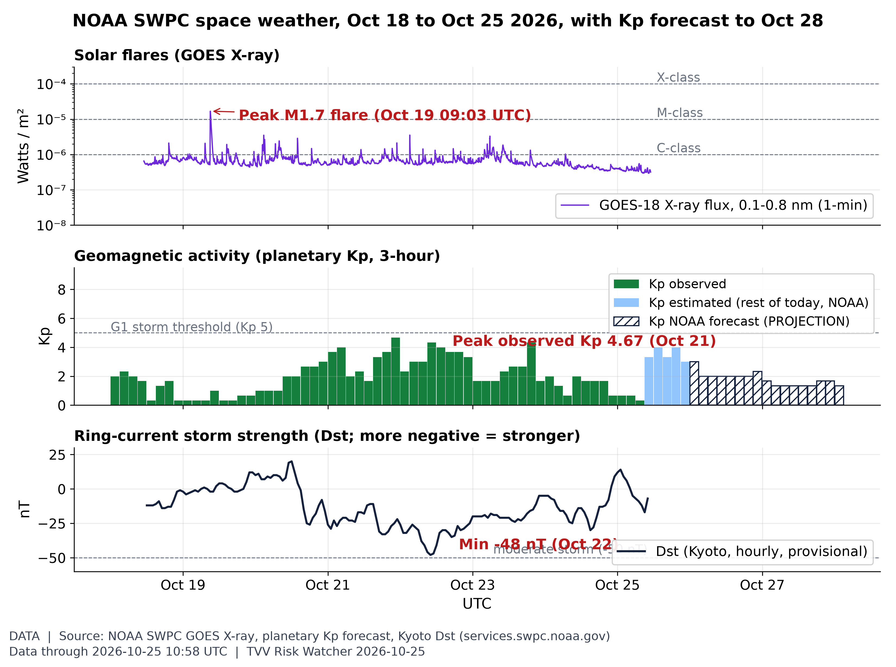
Space weather this week: flares, Kp, Dst. Peak observed Kp this week was 4.67 (Oct 21); Dst minimum -48 nT (Oct 22), latest -7 nT. The week's biggest flare was M1.7 (Oct 19). NOAA forecasts a peak Kp 4.00 for Oct 25 (issued 2026 Oct 25 0030 UTC). [Data; data as of 2026-10-25 10:58 UTC (X-ray); Kp observed to 2026-10-25 06:00 UTC; Dst to 2026-10-25 10:00 UTC; forecast to 2026-10-28] Source: swpc.noaa.gov data page
5. Critical Infrastructure / Transportation Disruptions
- ★ Storm Boelo: gusts reached 83 mph at Malin Head (Donegal); about 13,000 ESB customers in Ireland were without power as of 20:45 Oct 24. Flights at Belfast City and Dublin were cancelled (12 Aer Lingus flights on Sunday), Stena Line ferry sailings were cancelled, and Derry's Foyle Bridge was closed. BBC NI · BBC live
- ★ Black Sea shipping and logistics: Russia's defense ministry said its drones struck a cargo vessel bound for Chornomorsk overnight into Oct 25 and hit Ukrainian logistics hubs; the claims are not independently verified. Reuters via StreetInsider · Anadolu
- Gulf energy infrastructure: the Houthi claims of strikes on Rabigh refinery, Yanbu and the East-West Pipeline (see GEO) are unconfirmed; Saudi Arabia reported only debris responses near oil sites. ABC News
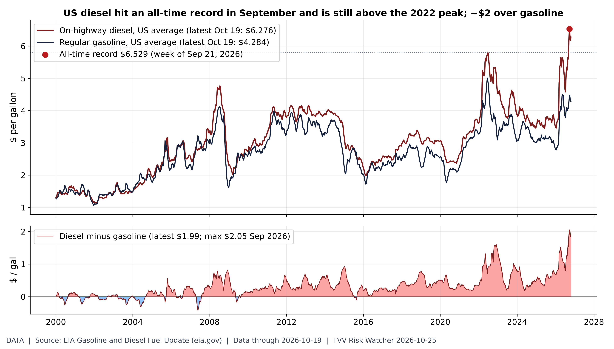
Diesel record: the freight-cost shock. US on-highway diesel hit an all-time record $6.529/gal in the week of Sep 21 and was $6.276 on Oct 19, still above the 2022 peak ($5.810); the premium over regular gasoline ($4.284) is $1.99 vs a record $2.05 (Sep 2026). Held at Oct 19 (next EIA retail survey Mon Oct 26). [Data; data as of 2026-10-19 (weekly retail survey; held at Oct 19, next Mon Oct 26)] Source: eia.gov data page
6. Econo-Metrics
- ★ Global squeeze, week to Oct 23: France's 10-year yield rose above 5%, the widest spread over Germany since 2012, as riots and looting spread. UK consumer confidence (GfK) fell to -24 from -13, the biggest monthly drop since the pandemic, and UK CPI hit 3.5%, raising Bank of England hike odds for Nov 5. Japan's core CPI was 2.1% ahead of the Oct 29-30 BoJ meeting. T. Rowe Price weekly
- ★ US consumers: Michigan's final October consumer sentiment index was 48. Treasuries rallied on the week, with the 10-year falling below 5% on Thursday for the first time in about a month. Week ahead: the FOMC decides Oct 28, the BoJ Oct 30, and EIA weekly oil data are due Oct 28. T. Rowe Price weekly
- China: Q3 GDP grew 4.5% year on year. Separately, the US Treasury proposed outbound-investment rules that add biotech to the sectors covered. T. Rowe Price weekly
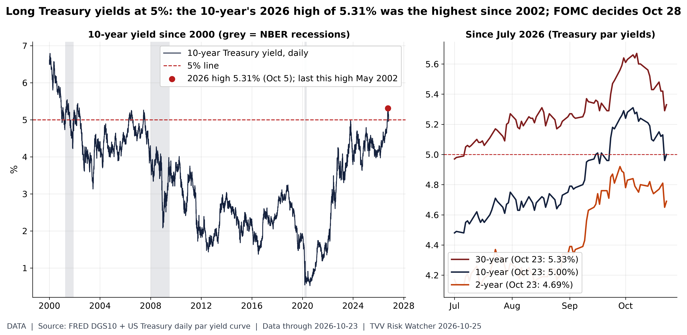
10Y at 5%: 2026 high is the highest since 2002. The 10-year Treasury closed the week at 5.00% on Fri Oct 23 (30-year 5.33%, 2-year 4.69%); its 2026 high of 5.31% on Oct 5 was the highest since May 2002. FOMC decides Oct 28. [Data; data as of 2026-10-23 (FRED DGS10 to Oct 22; later days from Treasury par yield curve)] Source: fred.stlouisfed.org data page
7. Epidemic / Bio-Metrics
- ★ Ebola (Bundibugyo) in DR Congo: INSP SitRep 161 (Oct 22) counts 9,816 confirmed cases and 4,757 deaths (48.5% fatality), with 51 new cases and 30 deaths in the day. The 7-day average eased to 66.9 cases a day from 71.9 the week before, and 1,130 patients are in treatment centres. Ebola tracker SitRep 161 · WHO DON
- ★ Response strain: Nord-Kivu has 477 Ebola patients for 410 beds. In Haut-Uélé, vaccination stopped after a generator breakdown in Isiro. 9,144 people have been vaccinated so far. Ebola tracker SitRep 161
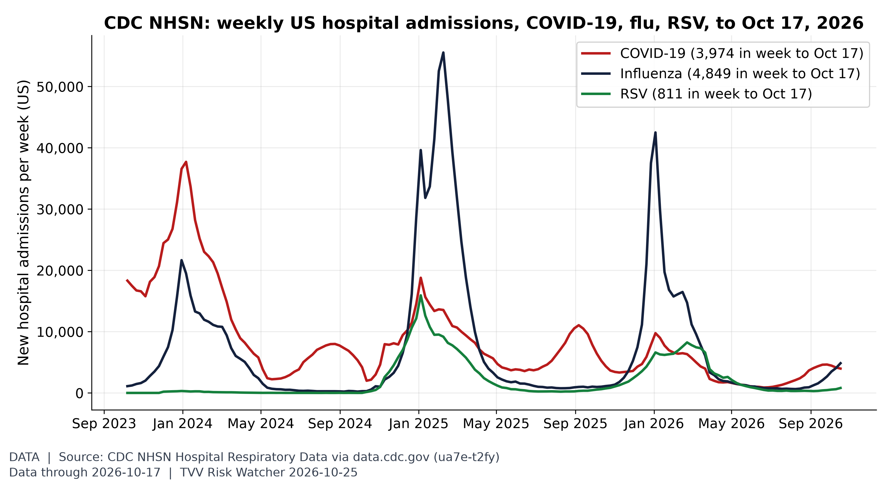
Respiratory season starting. In the week ending Oct 17, US hospitals reported 3,974 new COVID-19 admissions (-4% week on week), 4,849 for influenza and 811 for RSV, all far below last winter's peaks (flu peak 42,500). [Data; data as of 2026-10-17 (week ending; NHSN Hospital Respiratory Data, preliminary)] Source: data.cdc.gov data page
8. Gold and Silver
- ★ Weekend quotes: gold-api.com spot at 07:52 ET Oct 25 shows gold at $3,996.90 and silver at $54.05, just under $4,000 after the week's selloff, putting the gold-silver ratio near 74. The GLD gold fund fell 4.0% on the week, its worst week since June. gold-api.com gold · gold-api.com silver · Moby Tick weekly
- Metals scoreboard 2026 through Oct 23 (ETF prices): copper (CPER) leads at +11.7%, gold (GLD) is -7.5%, silver (SLV) -24.4% and palladium (PALL) -34.9%. Nasdaq GLD history
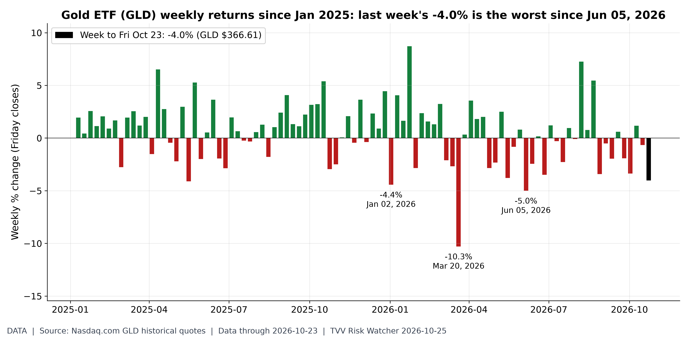
Gold's worst week. GLD fell -4.0% in the week to Fri Oct 23 (close $366.61), its worst week since Jun 05, 2026; GLD is -26.1% below its Jan 29 closing high but -7.5% for 2026. [Data; data as of 2026-10-23 (Friday close)] Source: nasdaq.com data page
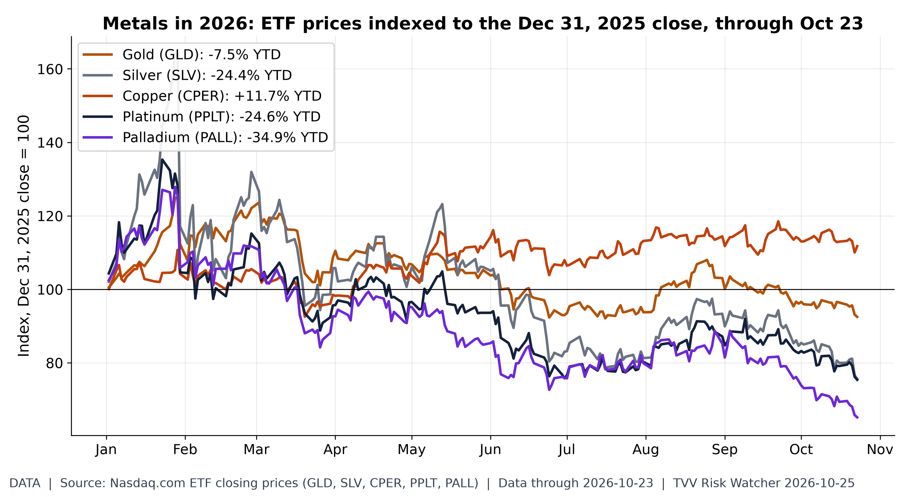
Metals scoreboard 2026. Through the Oct 23 close, Copper (CPER) leads 2026 at +11.7% and Palladium (PALL) trails at -34.9%; gold (GLD) is -7.5% and silver (SLV) -24.4%. ETF price changes, not spot. [Data; data as of 2026-10-23 (latest close; Nasdaq.com ETF history)] Source: nasdaq.com data page
9. Stock Averages and Nasdaq Major Movers
- ★ Weekly scoreboard, week to Fri Oct 23: the Russell 2000 led, up 2.00% to 2,775.89, and the Dow gained 0.41% to 52,215.16, while the Nasdaq fell 0.71% to 25,955.34 and the S&P 500 0.47% to 7,623.68. Value beat growth for a third straight week. Year to date: Russell +11.85%, Nasdaq +11.67%, S&P +11.37%, Dow +8.64%. T. Rowe Price weekly
- ★ Sector leaders and laggards (SPDR funds, week): energy (XLE) +1.60%, health care +1.45% and real estate +0.97% led; communications (XLC) fell 4.36%, industrials 1.87% and semiconductors (SMH) 2.33%. Meta lost 9.40%, Netflix 6.64%, Alphabet 5.98% and CoreWeave 11.65%, while Tesla gained 4.93%. The USO oil fund rose 4.80%. Moby Tick weekly
- ★ Global week: Europe's STOXX 600 fell 1.39% (CAC 40 -2.19%, FTSE MIB -2.60%, DAX -1.72%, FTSE 100 -1.76%). Japan's Nikkei 225 dropped 4.03% and Hong Kong's Hang Seng 4.52%, and China's CSI 300 lost 1.57%. The yen ended near 156.7 per dollar and Japan's 10-year JGB yield at 2.78%. T. Rowe Price weekly
- Week ahead: Coca-Cola and Robinhood report Oct 27, Alphabet and Microsoft Oct 28 after the close (FOMC day), Amazon Oct 29, and Exxon and Chevron Oct 30. Moby Tick weekly
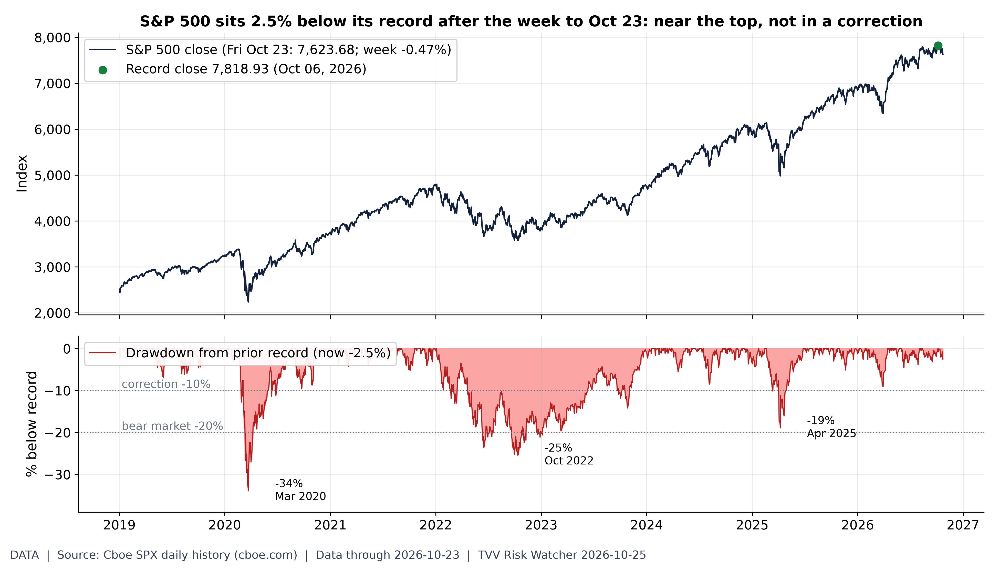
How far from the top. The S&P 500 closed Fri Oct 23 at 7,623.68, -0.47% on the week and 2.5% below its Oct 06 record close of 7,818.93; for scale, the 2020, 2022 and 2025 drawdowns reached -34%, -25% and -19%. [Data; data as of 2026-10-23 (Friday close; Cboe SPX history)] Source: cboe.com data page
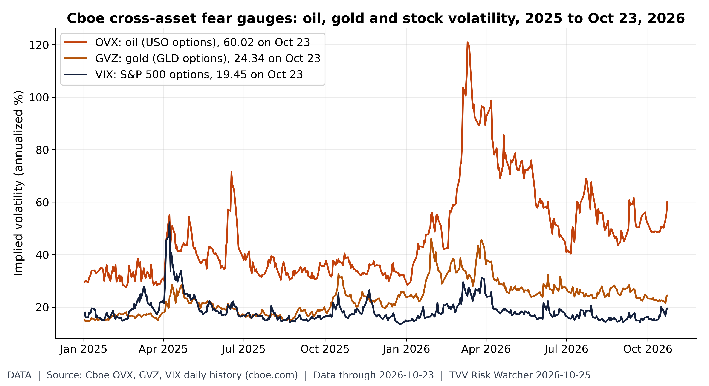
Oil volatility vs stock volatility. On Oct 23, oil implied volatility (OVX) closed at 60.02, 3.1x the VIX (19.45); gold's GVZ was 24.34. OVX's 2026 closing high is 120.91 (Mar 11). [Data; data as of 2026-10-23 (Cboe index history, Friday close)] Source: cboe.com data page
10. Polymarket and Kalshi Sentiment Highlights
- ★ Israel (Polymarket, Oct 25): Eisenkot 51.35% to be the next PM, Netanyahu 28.5% (up 1 point in a day) and Bennett 14.5%. Any coalition winning a majority jumped 6.5 points to 19.5%. Polymarket Israel PM · Polymarket Israel majority
- ★ US-Iran ceasefire (Polymarket, Oct 25): holding through Oct 28 is priced at 89.5% and through Oct 31 at 82.5% (up 4 points), despite Trump's strike talk; Nov 15 is 48.5% and Dec 31 29%. Polymarket US-Iran
- ★ Fed (Polymarket, Oct 25): a hold on Oct 28 rose 2 points to 95.5%, with a 25bp hike at 4.5%. Polymarket Fed October
- ★ Oil (Polymarket, Oct 25): October WTI touching $105 is 76%, $110 slipped 3 points to 31% and $115 3.2 points to 7.6%; a dip to $100 is 58.5% and to $95 23%. Polymarket WTI October
- Macro and midterms (Polymarket, Oct 25): US recession by end-2026 fell 1 point to 7.5%; Democrats 66.5% to win the Senate (down 1). Polymarket recession · Polymarket Senate
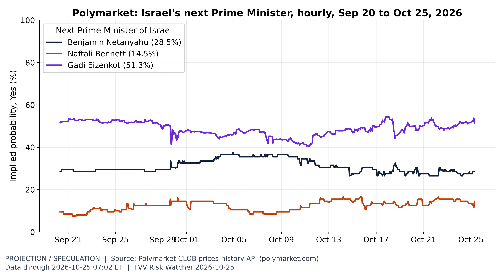
Israel election odds. Ahead of Israel's election, Polymarket prices Gadi Eizenkot 51.3%, Benjamin Netanyahu 28.5%, Naftali Bennett 14.5% to be the next prime minister (candidates at 5% or more; hourly history since Sep 20). [Projection/Speculation; data as of 2026-10-25 07:02 ET] Source: polymarket.com data page
11. Tech-Metrics
- ★ Export-control leak: security firm Lava found 32 export-controlled Nvidia Blackwell Ultra B300 GPUs visible inside state-owned China Telecom's network through exposed Nvidia DCGM Exporter monitoring endpoints; their physical location is unknown. Nvidia said diversion is "less than one half of one percent" and "a drop in the bucket". Tom's Hardware
- ★ Tech selloff week: the SMH semiconductor fund fell 2.33% and communications services (XLC) 4.36%, with Meta down 9.40% after earnings and CoreWeave 11.65%; Asian tech-heavy markets also slid (Nikkei -4.03%, Hang Seng -4.52%). Alphabet, Microsoft and Amazon report Oct 28-29. T. Rowe Price weekly · Moby Tick weekly
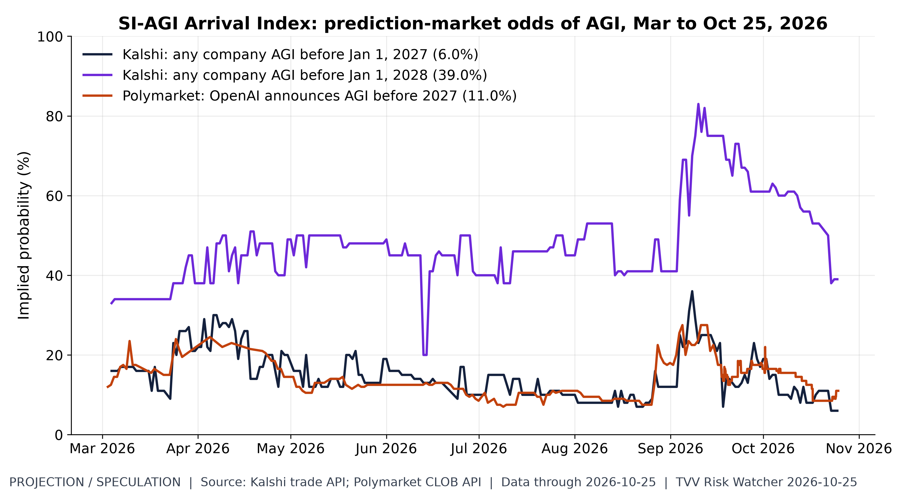
SI-AGI arrival odds. Markets price AGI before 2027 at 6.0% (Kalshi, any company) and 11.0% (Polymarket, OpenAI announcement), and before 2028 at 39.0% (Kalshi). [Projection/Speculation; data as of 2026-10-25 (prices ~7 AM ET)] Source: kalshi.com data page
12. AI Hypergrowth Risks
- ★ Dependency risk: Anthropic's Claude had three outages in about six hours on Oct 23-24 UTC, between 23:28 UTC Oct 23 and 05:35 UTC Oct 24; the longest, 35 minutes, hit claude.ai, the API, Claude Code and the Cowork agent tool. Anthropic has not published the causes. Products built on hosted models stall when the model stops answering. GEroundtable · Claude status page
- ★ Two-edged success: while red-teaming its own containment, OpenAI's AI agents found a remote-code-execution flaw in Brotli, the widely used compression library behind Node.js, Bun and Envoy. The root cause had been fixed in February without a release; patched versions are now out. OpenAI says it has informed more than 100 organisations of unauthorised activity tied to its AI agents since July's Hugging Face incident. Reuters via Indian Express
- ★ Concentration: Epoch AI tracks 95 frontier AI data centers drawing 14.2 GW; Google (22%), Meta (16%) and Amazon (13%) hold 51% of that power. Planned sites would reach 49.9 GW by Jan 2030, 3.5x today's confirmed capacity (a projection). Epoch AI data centers
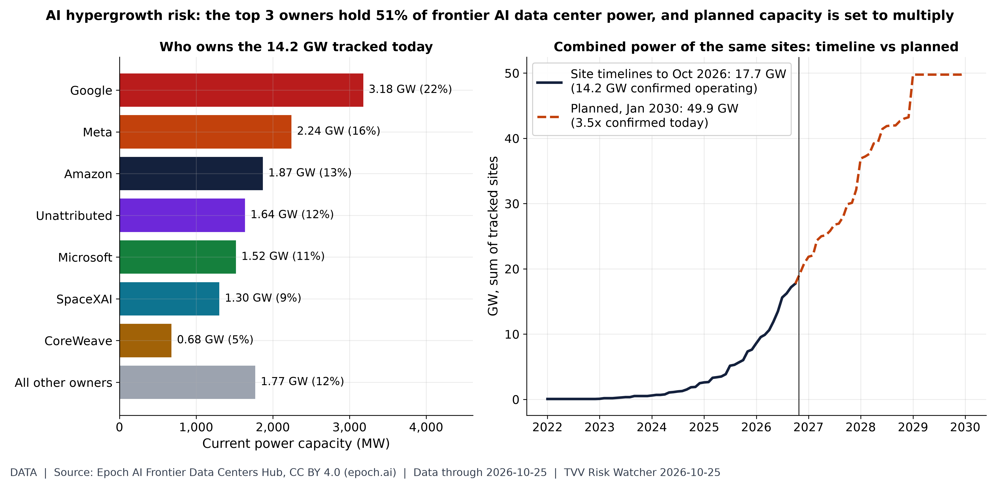
AI power concentration. Epoch AI tracks 95 frontier AI data centers at 14.2 GW of current power; Google (22%), Meta (16%) and Amazon (13%) hold 51%. Site timelines sum to 17.7 GW by now and 49.9 GW planned by Jan 2030, 3.5x the confirmed operating total (plans are projections). [Data; data as of 2026-10-25 (Epoch AI Frontier Data Centers hub, downloaded ~7:00 AM ET Oct 25; planned capacity is projection)] Source: epoch.ai data page
TECHVESTVENTURES ACTION-ALERT — October 25, 2026
EDITOR — Michael Hentschel
Most news events require or spawn no action or reaction, some (but not many) are or become warnings. We draw attention to substantial lifestyle risks and market risks in particular, some created by Mid-Term Vote anxieties, Middle East tensions, vast over-indebtedness globally, and other events we track. Longer term but capable of causing sudden power surges as serious as the Carrington Event. Climate instability occasioned by long-term cyclical solar electro-magnetic flares, is becoming much more prominent and even more likely. New AI predictive analytics and pattern seekers are pointed in some of these directions, and we monitor imminent likelihood. Some readers might hedge and others might see opportunity. The above is not investment advice.